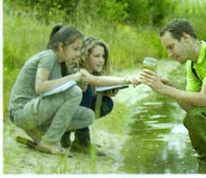
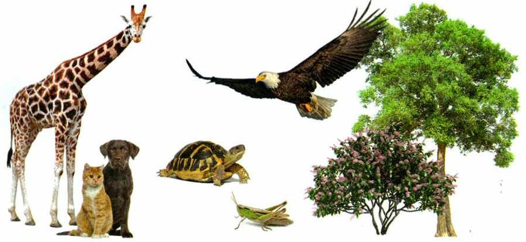
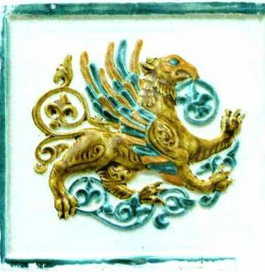
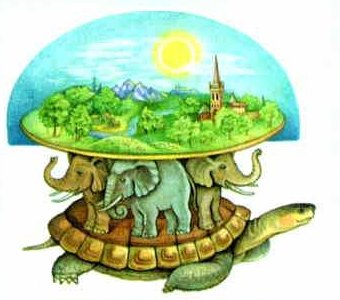
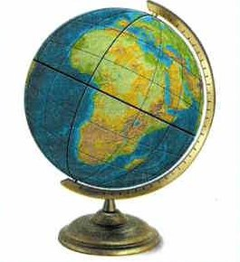
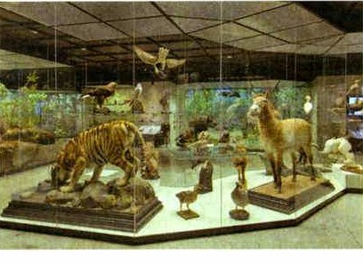
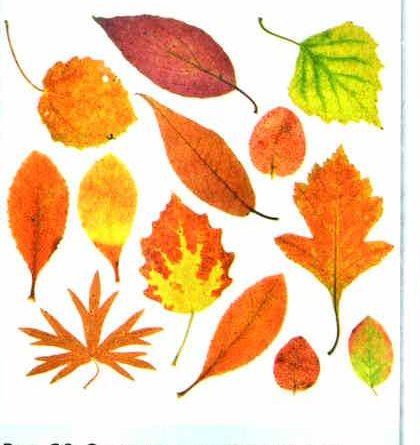

Научное познание
Люди изучают природу очень давно — с древних времён.
Первобытные люди знали о природе мало. Но они замечали: растения бывают разные. Рыбы живут в воде и хорошо плавают. Птицы быстро летают.
Зачем им это было нужно? Чтобы выжить. Надо было находить съедобные растения и знать, на каких зверей охотиться.
Знания передавали детям, а те — своим детям. Так тысячи лет копились сведения о живом.
Из этих житейских нужд постепенно выросла наука — особое занятие людей, чтобы узнавать новое о мире.
Человек стремился познать природу, которая его окружает, с глубокой древности. Первобытные люди очень мало знали о природе. Но они видели, что одни растения не похожи на другие. Знали, что рыбы обитают в воде и хорошо плавают, а птицы быстро летают в воздухе.
Интерес первобытного человека к познанию живого был в первую очередь связан с практическими целями: надо было научиться находить съедобные растения, узнать, на каких зверей охотиться. Полученные знания передавались из поколения в поколение. Сведения о живых организмах накапливались тысячелетиями. Из потребностей практики постепенно возникла наука — особый вид человеческой деятельности, направленный на получение новых знаний об окружающем мире.
1. Первобытные люди изучали природу не из любопытства. Зачем же? И что из этого со временем получилось?
2. Как знания первобытных людей дожили до следующих поколений?
Научный метод изучения живой природы
Научное знание тоже начинается с наблюдений. Но житейское знание и научное — не одно и то же.
Научное знание должно быть: обоснованным — есть причины так думать; доказуемым — это можно доказать; и в нём объяснено, как его получили.
Чтобы получать такие знания, учёные пользуются научными методами. Метод — это способ, путь к знанию.
Главное требование к методу — объективность. Результат не должен зависеть от того, кому что хочется увидеть. Объяснять результаты как вздумается нельзя.
Методы бывают двух видов. Практические — делаем и смотрим: наблюдение, измерение, эксперимент (опыт). Теоретические — думаем и объясняем то, что получилось. Так находят закономерности, а в конце — законы природы. Зная законы, человек понимает, что происходит в природе, может это предвидеть и использовать.
У каждого учёного есть правило: «Ничего не принимай на веру». Поэтому результат становится научным фактом, только когда его проверили и подтвердили другие исследования.
Главные методы — наблюдение, эксперимент и измерение. С их помощью учёные собрали огромный багаж знаний о живом. Потом эти знания обобщили в теории — на них стоит вся современная биология.
На уроках ты тоже научишься этим методам: наблюдать, экспериментировать, объяснять, что получилось, и делать выводы.
Научное знание родилось из непосредственных повседневных наблюдений, на основе которых люди получили много достоверных знаний о живой природе. От житейских наблюдений научные знания отличаются тем, что они должны быть обоснованными и доказуемыми, содержать объяснение того, как получены. Для изучения живой природы в ходе биологических исследований применяются различные научные методы, которые следует рассматривать в качестве основных источников знаний. Научный метод (от греч. методос — способ познания, путь) — это совокупность приёмов и операций, используемых при построении системы научных знаний. Важнейшим требованием к научному методу является его объективность, исключающая произвольное толкование результатов исследования.
Различают практические и теоретические методы. К практическим методам относят наблюдение, измерение и эксперимент (опыт). Теоретические методы связаны с объяснением результатов, полученных в ходе наблюдения или опытным путём. Они приводят к установлению различных закономерностей и взаимосвязей, а в конечном итоге — законов природы. Знание этих законов позволяет человеку понимать процессы, происходящие в живой природе, предвидеть их и использовать в практических целях.
Независимо от того, какие методы используются в науке, для каждого учёного важнейшим должен оставаться принцип «ничего не принимай на веру». Поэтому результаты, полученные в ходе научного исследования, становятся научными фактами только после того, как проверены и подтверждены другими исследованиями.
К основным научным методам относятся наблюдение, эксперимент (опыт) и измерение. Благодаря применению этих методов учёными был накоплен бесценный багаж знаний о различных биологических объектах, процессах и явлениях. В дальнейшем учёным удалось теоретически обобщить полученные данные и сформулировать теории в области биологии, которые составляют фундаментальные основы современной биологической науки.
Изучая биологию, вы узнаете о научных методах и научитесь пользоваться ими при проведении биологических исследований. Это позволит вам развить наблюдательность, умение экспериментировать, логично объяснять полученные результаты, формулировать выводы.
делаем и смотрим: наблюдение, измерение, эксперимент (опыт)
думаем и объясняем: закономерности, законы природы
Сначала работают руки и глаза, потом — голова.
3. Чем научное знание отличается от того, что первобытные люди знали о рыбах и птицах? Назови три признака.
4. Учёный один раз что-то увидел. Это уже научный факт? Какое правило учёных об этом говорит?
5. Как практические и теоретические методы работают вместе? Что получается в самом конце?
Метод наблюдения в биологии
Самый частый метод — наблюдение. Им пользовались ещё первобытные люди. И учёные пользуются им сегодня — отдельно или внутри других методов.
Наблюдать — значит замечать объекты и явления природы органами чувств: глазами, ушами, носом, руками. Главное: наблюдатель ничего не меняет. Он только смотрит и записывает (рис. 15).
Например, можно наблюдать, как меняется жизнь растений и животных по временам года. Это изучает наука фенология.
Чтобы наблюдение было научным, у него должны быть: цель, план, точные результаты — и при повторе в тех же условиях должно получаться то же самое.
Всё, что увидел, подробно записывают в дневник наблюдений: место, дату, время и что происходило. Потом пишут отчёт — с рисунками, фотографиями, коллекциями.
Чтобы результатам можно было верить, наблюдение повторяют в тех же условиях.
Наиболее распространённым методом, с помощью которого человек изучает природу, является наблюдение. Оно давало ценные знания об окружающем мире ещё первобытному человеку и сегодня продолжает использоваться в науке как самостоятельно, так и в качестве элемента других научных методов. Наблюдение — это восприятие природных объектов или явлений с помощью органов чувств. В ходе наблюдения объекта или явления человек лишь фиксирует результаты, не вмешиваясь в сам процесс (рис. 15). Например, наблюдения за сезонными явлениями в жизни растений и животных, которые изучает фенология (от греч. файно — являю и логос — наука).
Наблюдение как научный метод познания должно соответствовать следующим требованиям:
— быть целенаправленным, т. е. должны быть определены и сформулированы цель и задачи наблюдения;
— проводиться по определённому плану;
— давать точные результаты;
— совпадать с повторными наблюдениями в тех же условиях.
Получаемые в ходе наблюдения ответы на поставленные вопросы необходимо как можно подробнее записывать в специальный дневник наблюдений. Для получения достоверных результатов необходимо провести повторные наблюдения в тех же условиях.
В дневнике наблюдений указывают место, дату и время наблюдения, а также содержание наблюдаемого явления. Результаты наблюдений оформляют в виде письменного отчёта с рисунками, фотографиями, коллекциями и т. п.

6. Почему наблюдение называют самым распространённым методом? Найди в тексте две причины.
7. В этом разделе дважды сказано про повторные наблюдения в тех же условиях. Зачем их повторять? С каким правилом из раздела 2 это связано?
8. Что значит «не вмешиваясь в сам процесс»? Почему для наблюдения это важно?
Объекты, процессы и явления живой природы
Объект — это то, что изучает человек. Например: птица, которая прыгает с ветки на ветку; летящая бабочка; растение, которое цветёт на лесной опушке (рис. 16).
С объектами всё время что-то происходит. Птицы строят гнёзда. Из яиц появляются птенцы. Из бутона раскрывается цветок.
Одно такое событие, одно изменение — это явление.
А если явления идут одно за другим, по порядку, — это процесс.
Пример процесса — пищеварение. Ты жуёшь бутерброд: зубы и язык размельчают еду, слюна её смачивает, чтобы было легко проглотить. По пищеводу еда идёт в желудок — там её переваривает желудочный сок. Дальше пища движется по пищеварительному тракту и постепенно распадается на части. Организм получает питательные вещества. А то, что не переварилось, выводится наружу.
Каждый шаг — явление. Все шаги вместе — процесс.
То, на что направлена деятельность человека при изучении живой природы, называют объектом (от лат. объектум — предмет). Например, объектом изучения может быть птица, перепрыгивающая с ветки на ветку, летящая бабочка, цветущее на лесной опушке растение (рис. 16).
С объектами живой природы всё время что-то происходит: птицы строят гнёзда, из яиц появляются птенцы, из бутона раскрывается прекрасный цветок. Событие, случай, проявление чего-либо в виде изменений называют явлением. Явления, последовательно сменяющие друг друга, образуют процесс.
Например, когда мы жуём бутерброд, сначала работают наши зубы и язык, механически размельчая пищу, а слюнные железы смачивают еду, чтобы её было легко проглотить. По пищеводу пища, перемешиваясь, передвигается в желудок, где соединяется с желудочным соком и происходит её дальнейшее переваривание. Так, постепенно расщепляясь на отдельные соединения, пища передвигается по пищеварительному тракту, насыщая организм питательными веществами. Непереваренные остатки выводятся из организма. Всё, что мы сейчас описали, представляет собой пищеварительный процесс, образованный сменяющими друг друга явлениями.

▲ Выбери объект, за которым тебе интересно наблюдать, — это задание 2 из «Моей лаборатории» в конце параграфа.
одно изменение: из яйца появился птенец
явления одно за другим: пищеварение — от бутерброда до самого конца
Явление — один кадр. Процесс — весь мультик.
9. Птицы строят гнёзда, потом из яиц появляются птенцы. Каждое из этого — явление. А если взять их вместе, по порядку, — что получится?
10. Сколько явлений в процессе пищеварения? Назови первое и последнее.
11. Наблюдатель изучает «объекты или явления» (раздел 3). Что из примеров этого раздела можно было бы наблюдать на лесной опушке?
Ненаучное познание
Знания о мире дают не только учёные. Многое мы узнаём из книг, картин, музыки, из трудов философов и просто из жизни. Это ненаучное познание.
Поэты, писатели и художники находят в природе вдохновение — и создают произведения искусства. Так искусство тоже познаёт природу — художественно.
А ещё человек умеет не только слышать звуки природы, но и чувствовать их красоту, ритм, мелодию. Музыка родилась из звуков природы: шелеста листвы, пения птиц, шума волн.
Когда музыку соединяют с рисованием, движением или словами, мы ярче чувствуем цвет, звук, движение, настроение. От этого просыпается интерес к природе — хочется узнать её глубже.
Человек получает знания об окружающем мире не только в результате научных исследований. Многое мы узнаём из произведений литературы и искусства, работ философов, а также из обыденной жизни. Важной частью жизни людей является искусство, в котором отражается художественное познание природы. Поэты, писатели, художники создают произведения искусства, находя в природе вдохновение и озарение для творчества.
Ещё один удивительный дар, которым природа наделила человека, — это возможность не просто слышать звуки окружающего его мира, но и чувствовать их красоту, улавливать ритм и мелодичность. Зарождение музыкального искусства связано с восприятием и отражением величественных звуков природы — шелеста листвы, пения птиц, шума волн. Музыка связана с другими видами искусства. Сочетание музыки и рисования, музыки и движения, музыки и речи направлено на обогащение чувственного опыта — целостного восприятия цвета, звука, пластики, настроения, эмоций. Такое восприятие способствует пробуждению интереса к природе, более глубокому её постижению и изучению.
Люди всегда хотели понять, откуда взялась жизнь. Но научных ответов у них ещё не было. Тогда они объясняли мир через чувства и воображение — это эмоционально-чувственное восприятие. Так появились сказки и мифы: русалки, драконы, мифические животные (рис. 18).
Откуда взялись драконы? Легенды о них появились в Монголии, а потом их подхватили в Китае. В пустыне Гоби и сейчас находят кости и целые скелеты динозавров. Древние люди были наблюдательными. Они заметили: эти скелеты похожи на скелеты ящериц и змей — только огромные! Так в воображении появился дракон — с чешуёй и когтями.
А многоголовые драконы? Иногда у ящериц и змей рождается не одна голова, а две. Отсюда, наверное, и драконы с несколькими головами.
Сегодня наука изучает природу совсем по-другому (рис. 19).
Люди с древнейших времён изучали живую природу. Если взглянуть на историю становления взглядов человека на окружающий мир, то во многих культурах и религиях мира мы увидим огромный интерес к познанию сущности жизни, её происхождению и развитию. Не имея возможности найти научные ответы на возникающие вопросы, люди пытались объяснить их на основе эмоционально-чувственного восприятия, что нашло своё отражение в религиозных учениях и народном творчестве: в художественных образах сказок, мифов (русалки, драконы, мифические животные и т. п.) (рис. 18).
Так, например, легенды о драконах появились в Монголии и получили широкое распространение в Китае. Это объясняется тем, что в некоторых районах пустыни Гоби и сейчас находят кости и даже хорошо сохранившиеся скелеты динозавров. В древности люди тоже были наблюдательными и подметили сходство в строении скелетов ящериц и змей с найденными скелетами. Они увеличили их в размерах и получили драконов в образе пресмыкающихся с чешуёй и когтями. А если учесть, что иногда у ящериц и змей формируется не одна, а две головы, то можно предположить, откуда появились сказочные драконы с несколькими головами.
Разумеется, современный научный подход к изучению природы значительно отличается от имевшего место эмоционально-чувственного пути познания (рис. 19).



В чём принципиальное отличие научного познания от эмоционально-чувственного восприятия мира?
12. Как древние люди «получили» драконов? Что в этом было наблюдением, а что — воображением?
13. Музыка — не наука. Но чем она, по учебнику, помогает изучать природу?
14. Почему дракон не может быть научным фактом? Вспомни правило учёных из раздела 2.
Живые и фиксированные объекты
Объекты можно изучать живыми — или фиксированными (рис. 17: чучела животных в музее).
Фиксация — это когда объект сохраняют почти таким, каким он был живым. Если сделать это быстро, всё внутри остаётся как было.
Зачем два способа? За живыми смотрят, как они себя ведут и как отвечают на условия вокруг. А фиксированные помогают внимательно рассмотреть, как организм устроен внутри.
Из объекта делают препараты. Временный препарат после исследования уничтожают — он больше не нужен. Постоянный можно использовать много раз и долго.
На уроках у вас чаще будут постоянные препараты — их сделали специалисты. А временные на лабораторных работах иногда будете делать сами.
Биологические объекты можно исследовать как живыми, так и фиксированными (рис. 17). Фиксация — это сохранение материала в состоянии, близком к естественному. При быстрой фиксации изначальные структуры объекта сохраняются в неизменном виде. Если наблюдение за живыми объектами позволяет исследовать их поведение и реакцию на различные условия окружающей среды, то работа с фиксированными объектами помогает более тщательно изучить внутреннее строение живых организмов.
Из исследуемого объекта можно приготовить временные или постоянные препараты. И если первые обычно уничтожают после завершения исследования (так как они утрачивают свою ценность), то вторые можно использовать несколько раз в течение длительного времени. На уроках биологии вы чаще будете использовать именно постоянные препараты, которые были изготовлены специалистами. Однако во время выполнения лабораторных работ вам придётся иногда самим делать временные препараты.

15. Почему временный препарат после работы уничтожают, а постоянный хранят?
16. Чучела на рис. 17 — живые или фиксированные объекты? Что по ним изучить нельзя?
Итоги и «Моя лаборатория»
Научный метод · Наблюдение · Объекты живые и фиксированные · Научное и ненаучное познание
- Какова основная цель науки?
- Что такое научный метод? В чём его основной принцип?
- Какие методы исследования в биологии вам известны?
- Какой факт можно считать научным?
- Что такое научное наблюдение?
- В каких случаях биологу проще работать с живыми объектами, а в каких — с фиксированными?
- Чем научное познание отличается от ненаучного познания?
- Каково значение ненаучного познания для жизни человека? Влияет ли оно на развитие науки? Приведите примеры.
В средствах массовой информации неоднократно сообщалось о так называемом снежном человеке, приводились рассказы очевидцев о встречах с ним, зарисовки и фотографии его следов и даже самого снежного человека. Было организовано несколько экспедиций для поиска снежного человека. Почему, несмотря на многочисленные свидетельства очевидцев, существование снежного человека не может быть признано научным фактом? Свой ответ аргументируйте.
- Используя текст параграфа, сформулируйте требования, предъявляемые к наблюдениям.
- Используя рис. 16, выберите объект для наблюдений, который вам интересен. Составьте список вопросов, на которые вы могли бы получить ответы, проводя наблюдение за питанием, движением или раздражимостью выбранного объекта. Какие приборы, инструменты вы бы использовали для своих наблюдений?
Биологические знания пригодятся в жизни. Важно знать природу и растения места, где ты живёшь. Помогают в этом наблюдения за сезонными явлениями — их изучает фенология. Вести такие наблюдения нужно круглый год.
Понаблюдай осенью за растениями:
1. У каких растений меняется цвет листьев и какой он у разных растений (рис. 20)?
2. У каких растений листья остаются зелёными до заморозков?
3. Сколько длится листопад у разных растений?
4. Регулярно записывай все изменения в тетрадь.
5. По результатам подготовь сообщение и выступи с ним.
6. Сравни свои результаты с результатами одноклассников, обсудите, сделайте выводы.
Потом продолжи наблюдения зимой и весной.
Биологические знания и умения пригодятся вам в повседневной жизни. Они помогут умело использовать и приумножать богатства природы. Важно знать природные условия и растения местности, в которой вы живёте. Эти знания вы приобретёте на уроках и экскурсиях, при проведении опытов и наблюдений. В частности, вам помогут проведение наблюдений за сезонными явлениями в жизни растений и животных, которые изучает фенология. Фенологические наблюдения следует вести круглый год. С их помощью вы сможете лучше понять особенности развития природы и определить сроки проведения работ в саду, огороде, поле.
Проведите фенологические наблюдения за изменениями, происходящими в жизни растений осенью.
1. Понаблюдайте, у каких растений происходит изменение окраски листьев, какова она у разных растений (рис. 20).
2. Выясните, у каких растений листья остаются зелёными до заморозков.
3. Определите, как долго длится листопад у разных растений.
4. Регулярно записывайте в тетрадь все изменения в жизни растений.
5. По результатам своих наблюдений подготовьте сообщение и выступите с ним.
6. Сравните результаты своих наблюдений с результатами наблюдений других учащихся класса. Обсудите их. Сделайте выводы.
Продолжите фенологические наблюдения за изменениями, происходящими в жизни растений зимой и весной.

Проверь себя
Нажми на правильный ответ. Ошиблась — ничего страшного, пробуй ещё.
Летящая бабочка
Это то, что изучают. В учебнике летящая бабочка — пример объекта.
Из бутона раскрылся цветок
Одно изменение — явление.
Пищеварение: от бутерброда до самого конца
Много явлений подряд — процесс.
Люся, твоя дегу
Люся — то, за чем ты наблюдаешь. Объект.
Из яйца появился птенец
Одно событие — явление.
День за днём муравьи прокладывают ход всё длиннее
Много маленьких явлений одно за другим — процесс.
Цветущее на лесной опушке растение
Пример объекта из учебника.
Листья желтеют, потом краснеют, потом опадают
Явления сменяют друг друга по порядку — процесс.
Сказка про трёхглавого дракона
Это образ из воображения — эмоционально-чувственное восприятие.
Дневник наблюдений: место, дата, время, что видела
Записи по плану — так работает научное наблюдение.
Музыка, в которой слышен шум волн
Искусство — тоже познание природы, но не научное.
Результат, который проверили и подтвердили другие исследования
Это и есть научный факт.
Картина художника с осенним лесом
Художественное познание природы.
Рассказы очевидцев о снежном человеке
Рассказов много, но их не проверили и не подтвердили исследованиями — научным фактом это не стало.
1. Что такое наблюдение?
2. Какой метод НЕ относится к практическим?
3. Когда результат становится научным фактом?
4. Что изучает фенология?
5. Пищеварение — это…
6. Какой препарат можно использовать много раз и долго?
Расскажи вслух
Чем научное знание отличается от житейского
- Житейские знания — из повседневных наблюдений, их передавали из поколения в поколение (первобытные люди).
- Научное знание должно быть обоснованным, доказуемым и объяснять, как его получили.
- Правило учёных — «ничего не принимай на веру»: научный факт проверен и подтверждён другими исследованиями.
Какие бывают научные методы
- Научный метод — способ получения научных знаний; главное требование — объективность.
- Практические методы: наблюдение, измерение, эксперимент (опыт).
- Теоретические методы объясняют результаты и приводят к закономерностям и законам природы.
Как провести научное наблюдение
- Наблюдение — восприятие объектов и явлений органами чувств, без вмешательства.
- Четыре требования: цель, план, точные результаты, совпадение с повторными наблюдениями.
- Дневник наблюдений: место, дата, время, что происходило; потом — отчёт с рисунками и фото.
Объект, явление и процесс
- Объект — то, что изучают (птица, бабочка, растение).
- Явление — событие, изменение (из яйца появился птенец, раскрылся бутон).
- Процесс — явления, сменяющие друг друга; пример — пищеварение.
Живые и фиксированные объекты
- У живых объектов изучают поведение и реакцию на условия среды.
- Фиксация — сохранение в состоянии, близком к естественному; так изучают внутреннее строение.
- Препараты: временные уничтожают после работы, постоянные используют долго.